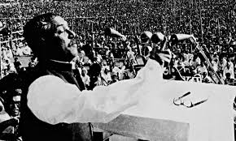

The Unforgettable History
My brothers,

I stand before you today with a heart overflowing with grief. You are fully aware of the events that are going on and understand their import. We have been trying to do our best to cope with the situation. And yet, unfortunately, the streets of Dhaka Chittagong, Khulna, Rajshahi and Rangpur are awash with the blood of our brothers. The people of Bengal now want to be free, the people of Bengal now want to live, and the people of Bengal now want their rights.
My brothers,
What have we done that was wrong? After the elections, the people of Bangladesh voted as one for me, for the Awami League. We were to sit in the National Assembly, draft a constitution for ourselves there, and build our
country; the people of this land would thereby get economic, political, and cultural freedom. But it is with regret that I have to report to you today that we have passed through twenty-three tragic years; Bengal's history of those years is full of stories of torture inflicted on our people, of blood shed by them repeatedly. Twenty-three years of a history of men and women in agony!
The history of Bengal is the history of a people who have repeatedly made their highways crimson with their blood. We shed blood in 1952; even though we were the victors in the elections of 1954 we could not form a government then. In 1958 Ayub Khan declared Martial Law to enslave us for the next ten years. In 1966 when we launched the six point movement our boys were shot
dead on 7 June. When after the movement of 1969 Ayub Khan fell from power and Yahya Khan assumed the reins of the government he declared that he would give us a constitution and restore democracy; we listened to him then. A lot has happened since and elections have taken place.
I've met President Yahya Khan. I've made a request to him not only on
behalf of Bengal but also as the leader of the party which has the majority in
Pakistan, I said to him: "You must hold the session of the National Assembly on
15 January." But he did not listen to me. He listened to Mr. Bhutto instead. At
first he said that the meeting would take place in the first week of March. We
said, "Fine, we will be taking our seats in the Assembly then." I said we will
carry out our discussions in the Assembly. I went so far as to say that if anyone
came up with an offer that was just, even though we were in the majority we
would
agree to that offer.
Mr. Bhutto came here; he carried out discussions with us; he had said that
the doors of negotiations had not been shut and that there would be further
negotiations. I then had talks with other leaders; I said to them, "Come and sit
down with us; let's create a constitution for ourselves through discussions." But
Mr. Bhutto declared that if West Pakistani members came here the Assembly
would end up as a slaughterhouse. He claimed that whoever came here would
be slaughtered. He said that if anyone showed up here all shops from Peshawar
to Karachi would be shut down.
I declared that the Assembly would continue to meet. But suddenly on the 1st
of March the Assembly was shut down. Mr. Yahya Khan called the session of the
Assembly in his capacity as the President and I declared I would be attending it.
Mr. Bhutto said he wouldn't be part of it. Thirty-five members of the Assembly
came from West Pakistan to take part in its proceedings. But it was dissolved all
of a sudden. The blame was put on the people of Bengal, the finger was pointed
at me!
After the Assembly's session was prorogued, the people of this country
protested. I told them. "Observe the General Strike we have called peacefully."
I told them" Shut down all mills and factories." Our people responded to my
call. They came to the streets spontaneously. They expressed their firm.
determination to carry out the struggle peacefully.
What have we got in return? Those who brought arms with our money to
defend us from external enemies are now using those arms on the poor, -the
wretched, -the downtrodden people of the land. Bullets are being aimed at
their hearts. We constitute the majority in Pakistan; but whenever we Bengalis
have tried to assume power they have used force on us.
I have had a talk with Mr. Yahya Khan. I told him, "Mr. Yahya, you are the
President of Pakistan: come and observe how the poor people of my country are
being mowed down with bullets; come and see how our mothers are being
deprived of their children; how my people are being massacred. Come, observe,
and only then pass a judgment on what is going on. He has apparently said that I
had agreed to attend a Round Table Conference on the 10th of March. Didn't I
say a long time back: what is the point of another Round Table conference? Who
will I sit with? Should I sit with those who have shed the blood of my people? He
has suddenly dissolved the Assembly without carrying out any discussions with
me; after sitting in a secret meeting for five hours he gave a speech where he has
put all the blame on me. He has even blamed the Bengali people!
My brothers,
The Assembly has been called into session on the 25th of March. But the blood
spilled on our streets has not yet dried. About the 10th of this month, I have told
them: Mujibur Rahman won't join the Round Table Conference because that
would mean wading over the blood that has been shed. Although you have
called the Assembly into session, you'll have to listen to my demands first.
You'll have to withdraw Martial Law. You'll have to return all army personnel
to their barracks. You'll have to investigate the way our people have been
murdered. And you'll have to transfer power to the representatives of the
people. It is only then that I'll decide whether we will take our seats in the
Assembly or not. I don't want the Prime Minister's office. We want the people of
this country to have their rights. I want to state clearly that from this day
Bangladesh's courts, magistracies, government offices and educational
institutions will be shut down indefinitely. So that the poor don't have to suffer, so that my people don't have to go through hardships, all other things will be exempted from the General Strike from tomorrow. Rickshaws, horse carriages, trains, and launches will be allowed to move. Only the Secretariat, the Supreme Court, the High Court, Judges' Court, and semi-government organizations such as WAPDA will not be allowed to work. On the 28th employees will go and collect their salaries. If their salaries are not paid, if another bullet is fired, if my people are shot dead again, I request all of you: convert every house into a fort; confront the enemy with whatever you have. And even at the risk of your life, and even if I am not around to direct you, shut down all shops and make sure that traffic on all roads and ports are brought to a standstill. If need be, we will starve to death, but we'll go down striving for our rights.
To those in the armed forces I have this to say: you are my brothers; stay in your barracks and no one will bother you. But don't try again to aim your bullets at our chests. You can't suppress seventy million people forever. Since we have learned to sacrifice ourselves no one can suppress us any more.
And as for our martyrs and those who have been wounded, we in the Awami League will do everything we can to assist them and their loved ones. If you have the means, please give what little you can to our Relief Committee. To owners of factories whose workers had participated in the General Strike the last seven days I have this to say: make sure that they are paid wages for those days. To government employees I have this to tell: you'll have to listen to my directives. Till our country is liberated, taxes and custom duties won't be collected. No one will pay them either.
Remember: the enemy is amidst us to create chaos and confusion, to create anarchy and to loot. In our Bengal Hindus and Muslims, Bengalis and non Bengalis are all brothers. We are responsible for their safety; let us not taint ourselves in any way.
Remember those of you who work for radio and television: if the people running the radio station aren't ready to listen to us, no Bengali will report for work there. Banks will be open for two hours every day so that people can collect their salaries. But we won't allow even a single poisha to be transferred from East Bengal to West Pakistan. Telephones and telegram services will continue as before in our East Bengal; if we have to transmit news abroad you will see to that. But if any attempt is made to exterminate our people all Bengalis must take appropriate action.
Form Revolutionary Committees under the leadership of the Awami League in every village, every community. Be prepared to act with whatever you have in your possession. (L 116)
Remember: since we have already had to shed blood, we'll have to shed a lot more of it: by the Grace of God, however, we'll be able to liberate the people of this land.
The struggle this time is a struggle for freedom-the struggle this time is a struggle for emancipation.
Long live Bengal!